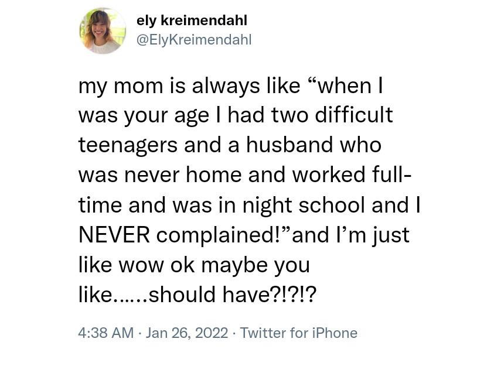
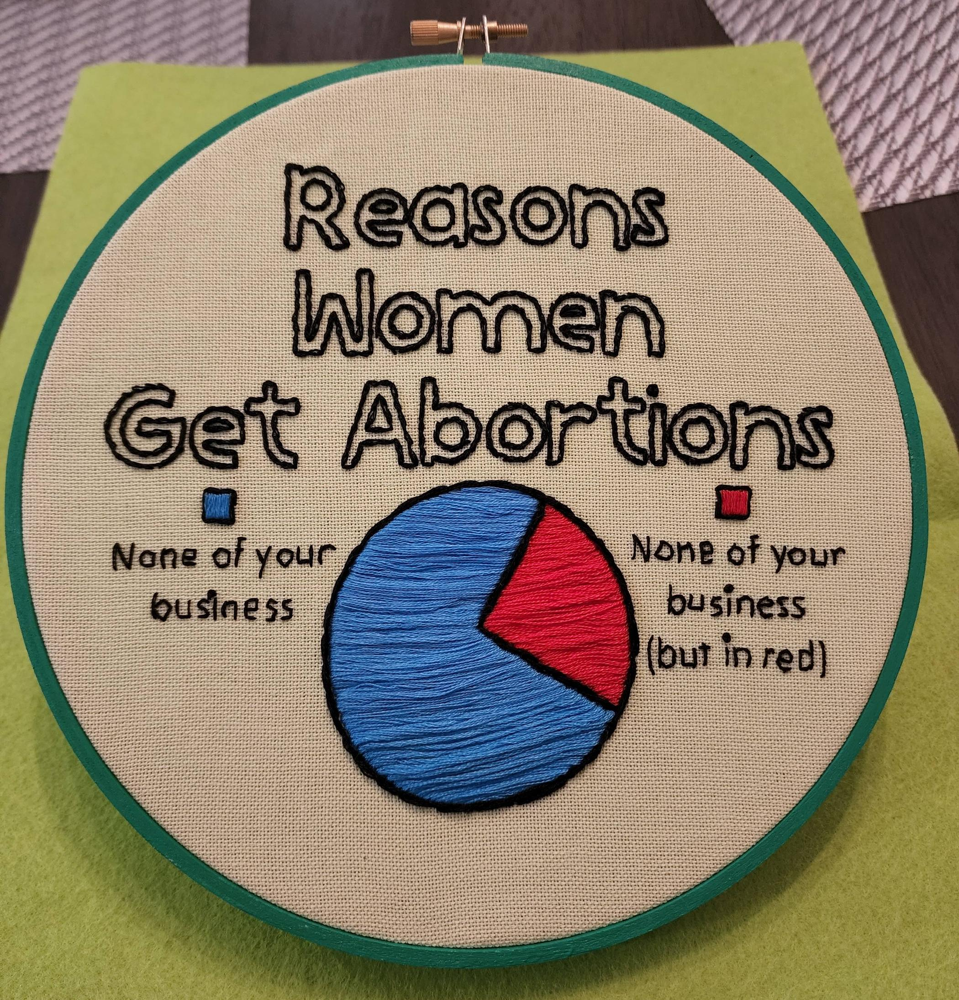
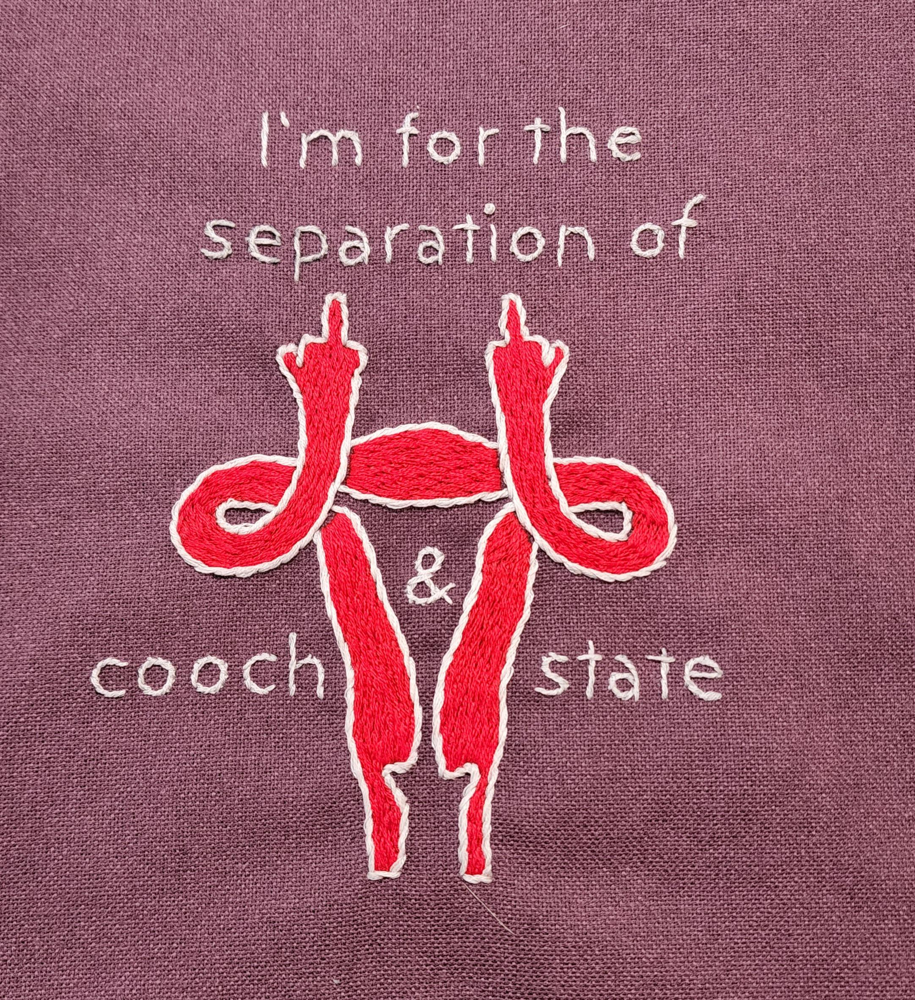
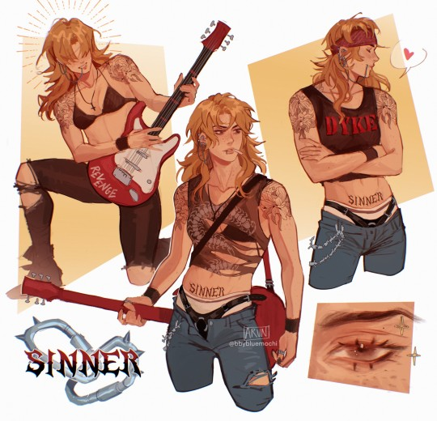
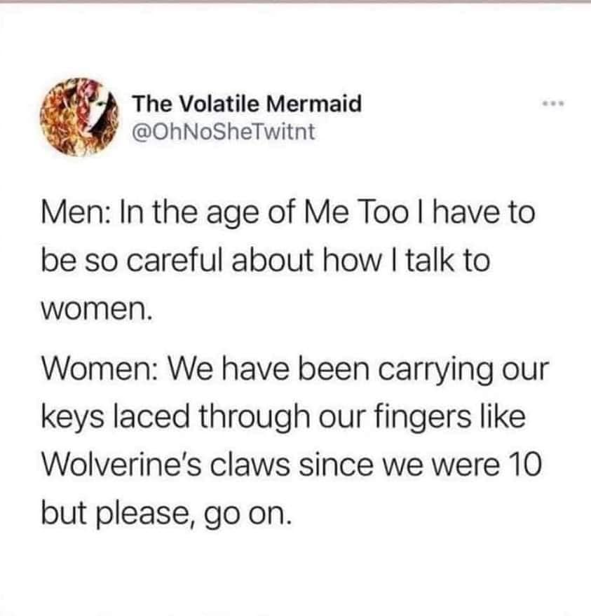

Women's Anger As Told On The Internet
(With Some Context)
×
Written after the El Paso shooting in 2019. Mitch McConnell is notoriously against gun control.

Woman's anger getting downplayed.

Pro-reproductive rights stitching. Click this text for source!

Pro-reproductive rights stitching by the same artist as the other one. Click this text for source!

Drawing of an 80's rock woman. Click this text for source!

Response to men in general being clueless to the point of the #MeToo movement.